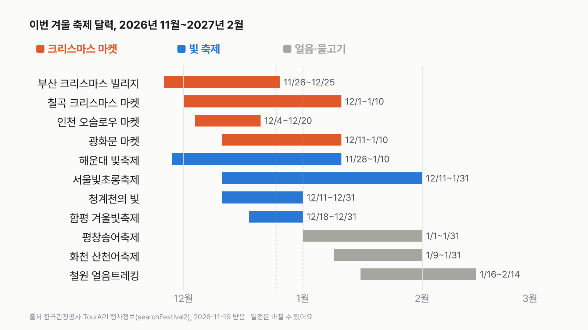

올겨울 축제 달력 한 장
겨울 축제는 종류마다 철이 달라요. 마켓과 빛 축제는 12월, 산천어·송어·얼음 축제는 1월이에요. 12월에 강원도 얼음 축제를 찾아가면 아직 문을 열기 전일 수 있어요.

3줄 요약
- 한국관광공사 축제 목록에 올라온 이번 겨울(2026년 12월~2027년 2월) 축제 가운데 겨울에만 하는 11개를 날짜순으로 모았어요.
- 11월 말~12월은 크리스마스 마켓과 빛 축제, 1월은 얼음·물고기 축제예요.
- 크리스마스 마켓 4곳은 모두 11월 26일~12월 11일 사이에 문을 열어요.
크리스마스 마켓 4곳
| 행사 | 지역 | 기간 |
|---|---|---|
| 크리스마스 빌리지 부산 2026 | 부산 해운대구 | 11월 26일 ~ 12월 25일 |
| 럭키칠곡 크리스마스 마켓 | 경북 칠곡군 | 12월 1일 ~ 1월 10일 |
| 오슬로우 빈티지 크리스마스 마켓 | 인천 | 12월 4일 ~ 12월 20일 |
| 광화문 마켓 | 서울 종로구 | 12월 11일 ~ 1월 10일 |
- 크리스마스(12월 25일)가 지나도 여는 곳은 칠곡·광화문(1월 10일까지)이에요.
- 가장 짧은 곳은 인천(17일)이에요.
빛 축제 4곳
| 행사 | 지역 | 기간 |
|---|---|---|
| 해운대 빛축제 | 부산 해운대구 | 11월 28일 ~ 1월 10일 |
| 서울빛초롱축제 | 서울 중구 | 12월 11일 ~ 1월 31일 |
| 청계천의 빛 | 서울 중구 | 12월 11일 ~ 12월 31일 |
| 함평 겨울빛축제 | 전남 함평군 | 12월 18일 ~ 12월 31일 |
- 서울빛초롱축제는 52일로, 네 곳 가운데 가장 길어요.
- 함평 겨울빛축제는 지난겨울(11월 28일 ~ 1월 11일)보다 늦게 시작해 2주만 열려요.
얼음·물고기 축제 3곳
| 행사 | 지역 | 기간 |
|---|---|---|
| 평창송어축제 | 강원 평창군 | 1월 1일 ~ 1월 31일 |
| 얼음나라화천 산천어축제 | 강원 화천군 | 1월 9일 ~ 1월 31일 |
| 철원 한탄강 얼음트레킹 축제 | 강원 철원군 | 1월 16일 ~ 2월 14일 |
- 세 곳 모두 강원도이고, 1월에 시작해요.
- 1월 16일부터 31일까지는 세 축제가 다 열려 있어요.
아직 일정이 안 올라온 축제
지난겨울(2025~2026년) 목록에는 있었지만, 이번 겨울 일정이 11월 19일까지 올라오지 않은 축제도 있어요.
- 대관령눈꽃축제(평창): 지난겨울 2월 13일 ~ 2월 22일
- 안성 동막골 빙어축제: 지난겨울 1월 17일 ~ 2월 15일
- 영양꽁꽁겨울축제: 지난겨울 1월 9일 ~ 2월 1일
- 단양 겨울놀이 축제: 지난겨울 1월 23일 ~ 1월 26일
올해 일정은 각 지역 공지를 꼭 확인하세요.
숫자를 다시 보며
이 달력은 한국관광공사 목록에 올라온 날짜예요. 날씨(얼음 두께, 눈)에 따라 얼음·눈 축제는 날짜가 바뀌거나 취소될 수 있어요. 지난겨울 날짜는 참고용이에요. 몇 명이 다녀갔는지는 이 목록에 없어요. 여러분은 올겨울 어느 축제에 가 보고 싶나요?
이 숫자는 어디서 왔나요
출처
기준일 2026년 11월 19일까지 목록에 올라온 일정이에요.
| 데이터 | 출처 | 쓰임 |
|---|---|---|
| 축제 일정 | 한국관광공사 TourAPI(공공데이터포털), 2026-11-19 | 이번 겨울 11개, 지난겨울 4개 |
어떻게 셌나요
- 자료: 한국관광공사 TourAPI 행사정보조회(searchFestival2), 2026년 11월 15일에 받고 11월 19일에 다시 받음.
- 빠진 행사: 울산 크리스마스 마켓은 11월 15일 목록엔 있었지만 11월 19일 목록에서 내려가 뺐어요. 취소인지는 목록으로 알 수 없어요.
- 고른 기준: 2026년 12월~2027년 2월과 기간이 겹치는 행사 가운데, 이름에 크리스마스·마켓·빛·송어·산천어·얼음이 들어간 겨울 행사만 골랐어요. 1년 내내 하는 상시 행사(90일 넘음), 공연·전시·마라톤은 뺐어요.
- 기간(일): 끝 날 − 시작 날 + 1.
- 지난겨울 일정: 같은 자료의 2025~2026년 겨울 목록이에요.
한계 3가지
이 데이터로 말할 수 없는 것
- 목록에 올라오지 않은 축제는 빠져요. 이번 겨울 일정은 앞으로 더 올라올 수 있어요.
- 행사 날짜는 바뀔 수 있어요. 가기 전에 각 행사 공지를 확인해야 해요.
- 방문객 수, 입장료, 붐비는 정도는 이 자료에 없어요.
새 글 나오면 받아 보기
피드 리더 앱에 이 사이트 주소를 한 번 넣어 두면, 새 글이 올라올 때 앱에 떠요. 가입이나 메일 주소는 필요 없어요.
받는 법 보기
- 피드 리더 앱을 하나 골라요. 새 글을 모아 보여 주는 앱이에요. 예를 들면 Feedly나 Inoreader가 있어요. 둘 다 무료고 웹·휴대폰에서 써요.
- 앱에서 '구독 추가'(+)를 누르고 아래 주소를 붙여 넣어요.
- 끝이에요. 새 글이 올라오면 앱 목록에 떠요.
https://protofu.github.io/opendata-insight/feed.xmlFeedly를 쓴다면 여기를 눌러 바로 추가할 수도 있어요.